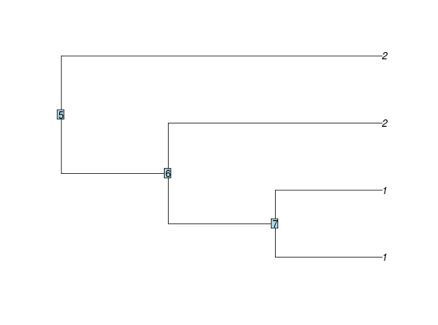

parsimonyCost is an implementation of the Sankoff algorithm,
when the cost of transition between two state is always one. It is used
in functions parsimonyNumber and enumerate_parsimony
to count or enumerate all the parsimonious solutions given one clustering of the
tips.
parsimonyCost(phylo, clusters = rep(1, length(phylo$tip.label)))
| phylo | a phylogenetic tree, class |
|---|---|
| clusters | the vector of the clusters of the tips. (Default to all the tips in a single group). |
An S3 class "parsimonyCost" containing a
(ntaxa + nNodes) x (nclus) matrix of the total number of shifts needed to
get the clustering, if starting from a node in state k. The cost can be
extract from any subtree with function extract.parsimonyCost.
extract.parsimonyCost, parsimonyNumber,
enumerate_parsimony, partitionsNumber,
equivalent_shifts
tree <- read.tree(text="(((1,1),2),2);") plot(tree); nodelabels()clusters <- c(1, 1, 2, 2) costs <- parsimonyCost(tree, clusters) costs#> #> Parsimony cost: 1. #>#> [1] 1#> [1] 0